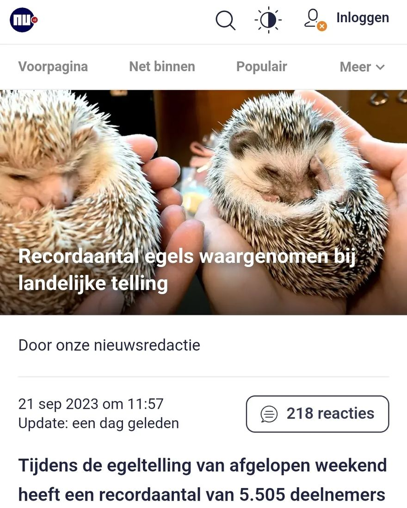

Witbuikegel, geen egel
22 september 2023 · NU.nl
- Op de foto
- Witbuikegel
- Het ging over
- Egel

Dat het goed gaat met de Egels in Nederland is natuurlijk heel fijn. We hopen alleen niet dat het allemaal witbuikegels zijn, want die zouden het hier niet overleven.
Volgende keer weer een foto van onze inheemse Egel? @nu.nl.
Thanks voor het sturen: @mick_vos